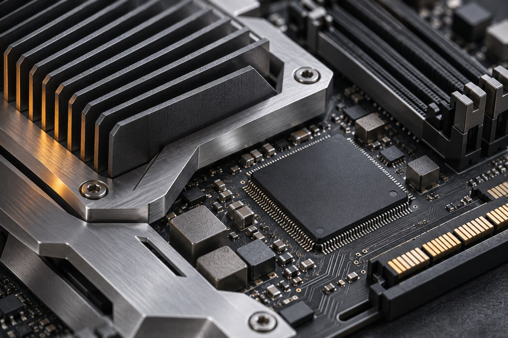

Anthropic正式掛牌交易，市場開始檢驗前沿AI公司的成長與成本。
Anthropic完成納斯達克首日交易
展開分析 ↓
已核對事實：美聯社11月19日報導，Anthropic當日在納斯達克開始交易，開盤時估值躍至約2.01兆美元；估值取決於計算口徑與股價變動。
為何重要 · 編輯分析：這是昨天IPO定價後的新進展；公開市場將持續檢視模型收入、基礎設施成本與經營風險。
閱讀原文 ↗2026-11-19
2026-11-20 正式版 · 更新於 09:52（Asia/Shanghai，UTC+8） · 逐篇核對來源，事實與編輯分析分列。
本期7則涵蓋AI資本市場、軟體資安、晶片與新硬體。

Anthropic開始交易；研究人員披露Microsoft代理套件惡意版本。
OpenAI介紹AMD電路設計合作；Lenovo與Cyient公布算力及晶片業務進展。
Intelligent Eyewear預購供應售罄；G3A Mini PC接受第三方測試。
數字為本期收錄篇數；0 表示本期未收錄，並非沒有重大新聞。
依本期文章分類計數，每篇只計一次，並非全市場熱度。
Anthropic正式掛牌交易，市場開始檢驗前沿AI公司的成長與成本。
已核對事實：美聯社11月19日報導，Anthropic當日在納斯達克開始交易，開盤時估值躍至約2.01兆美元；估值取決於計算口徑與股價變動。
為何重要 · 編輯分析：這是昨天IPO定價後的新進展；公開市場將持續檢視模型收入、基礎設施成本與經營風險。
資安研究人員披露Microsoft Python代理套件的惡意版本。
已核對事實：Wiz報告指出，11月17日上架PyPI的agent-framework 1.26.1及1.26.2包含竊取憑證程式，後已隔離；研究人員認為發布管線憑證可能遭侵害，取得方式尚未確定。
為何重要 · 編輯分析：企業應依官方公告與研究報告檢查受影響版本、環境與日誌；若確認暴露，應依事件應變流程撤銷或輪替憑證。
OpenAI說其模型協助AMD優化部分晶片電路。
已核對事實：OpenAI於11月18日稱，其模型重寫部分電路描述，與AMD合作在旗艦GPU部分設計相對基準實現最高14%的功耗、效能與面積綜合改善；部分變更已納入送製設計。
為何重要 · 編輯分析：數據為公司在特定區塊與評估條件下的結果，不代表整顆GPU效能提升14%；晶片設計仍需形式驗證與實際製造測試。
Lenovo公布季度業績，資料中心業務帶動營收成長。
已核對事實：Lenovo於11月19日公布2026／27財年第二季營收302億美元、年增48%；基礎設施業務營業利潤首次超過10億美元。
為何重要 · 編輯分析：業績顯示企業與雲端算力需求對硬體供應商的重要性；公司對未來需求的樂觀判斷仍屬展望。
GlobalFoundries擬策略投資印度客製晶片公司Cyient Semiconductors。
已核對事實：Cyient Semiconductors於11月19日公告批准GlobalFoundries 1,000萬美元策略股權投資，並表示將用於擴展客製ASIC能力與供應鏈合作。
為何重要 · 編輯分析：設計與晶圓製造商更緊密合作可能改善供應協調；公告為投資安排，不能視為具體產能或產品已交付。
Samsung、Google與Gentle Monster合作眼鏡的韓國預購供應出現售罄。
已核對事實：韓國SBS於11月19日報導，Gentle Monster官網16款眼鏡預購顯示售罄；韓國與美國預計12月10日上市。眼鏡結合Gemini，提供語音操作與翻譯等功能。
為何重要 · 編輯分析：售罄反映預購供應狀況，並不代表已出貨或證明整體銷量；使用前須核對地區、手機相容性與隱私設定。
ACEMAGIC G3A小型工作站實測顯示，本地AI能力受顯存與CPU功耗限制。
已核對事實：Geeky Gadgets於11月19日整理ETA Prime的G3A測試：配置Core i9-13900F及16GB RTX 2000 Ada；測試指出CPU持續功耗限制在65W，顯存亦限制模型大小。
為何重要 · 編輯分析：這是特定配置的第三方實測整理，非廠商普遍效能保證；採購需核對Windows軟體、介面、散熱及當地供貨。
本期沒有符合篩選條件的文章。可切回「全部公司」或「全部」。